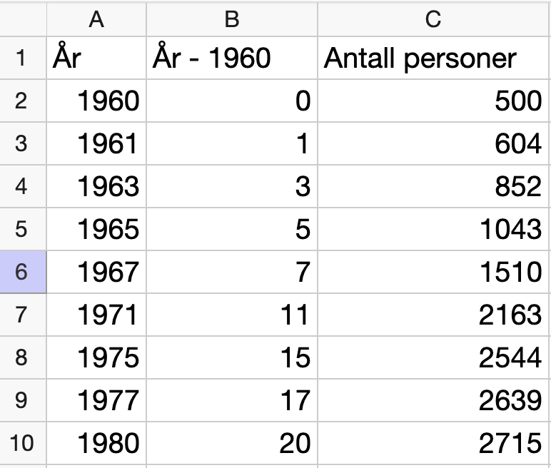
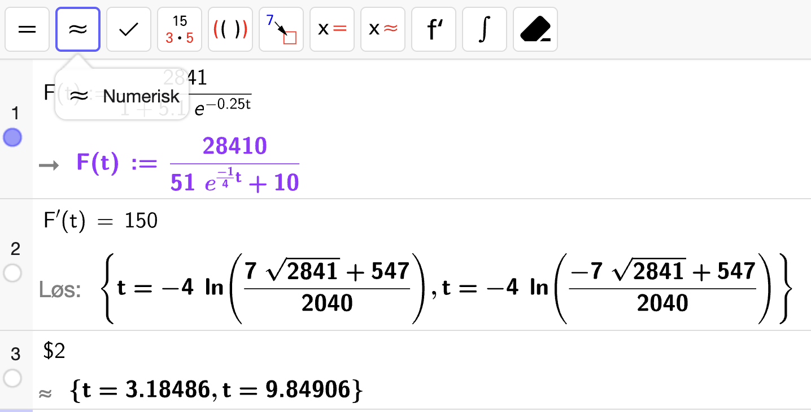
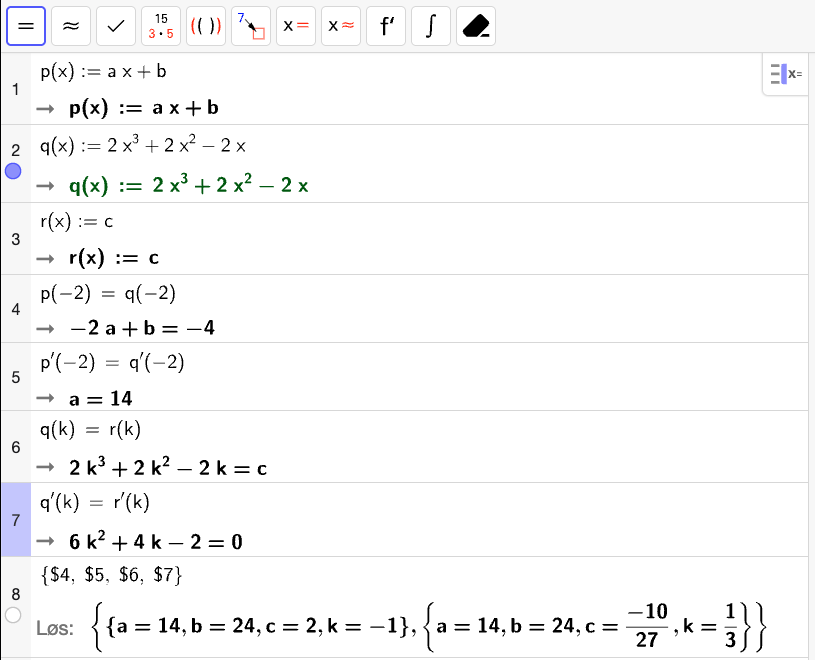

Eksamen høsten 2025#
Eksamen høsten 2025 var todelt med 2 timer på del 1 og 3 timer på del 2. Våren 2026 vil eksamen være todelt med 3 timer på del 1 og 2 timer på del 2.
Del 1 (Uten hjelpemidler – 2 timer)#
Oppgave 1 (5 poeng)
Deriver funksjonen \(f\) gitt ved
Fasit
Løsning
Funksjonen \(g\) er gitt ved
er kontinuerlig og deriverbar for alle \(x \in \real\).
Bestem \(g'(2)\) og \(g'(3)\).
Fasit
Løsning
Vi skriver om uttrykket til
Så bruker vi produktregelen for derivasjon:
Så regner vi ut de verdiene:
Hva forteller svarene i oppgave b om grafen til \(g\) når \(x \in [2, 3]\)?
Fasit
Grafen til \(g\) har et ekstremalpunkt på intervallet \([2, 3]\).
Løsning
Siden \(g'(x)\) har motsatt fortegn i endepunktene, må \(g'(x) = 0\) for minst ett punkt \(x \in \langle 2, 3\rangle\). Det betyr at grafen til \(g\) har et ekstremalpunkt i intervallet \([2, 3]\).
Oppgave 2 (3 poeng)
Løs likningen
Fasit
Løsning
Vi setter \(u = \lg x\) slik at likningen kan skrives som
Så bruker vi \(abc\)-formelen som gir:
Altså må
som vil si at
Det betyr at
Bestem \(a\) slik at
Fasit
Løsning
Vi bruker definisjonen av logartimen med grunntall \(a\) som gir at
Dermed har vi at
Altså er \(a = 4\).
Oppgave 3 (3 poeng)
Bestem grenseverdien dersom den eksisterer:
Fasit
Grenseverdien eksisterer ikke:
Løsning
Vi prøver å sette inn \(x = -2\) i uttrykket:
Dette forteller oss at grenseverdien går mot \(\pm \infty\) når \(x \to -2\), så grenseverdien eksisterer ikke.
Bestem \(a\) slik at grenseverdien eksisterer:
Bestem grenseverdien for denne verdien av \(a\).
Fasit
Løsning
For at grenseverdien skal eksistere, må vi for et \(\dfrac{0}{0}\)-uttrykk slik at vi kan bruke L’Hôpitals regel:
Altså må vi kreve at
Når \(a = 3\), kan vi bruke L’Hôpitals regel for å finne grenseverdien:
Oppgave 4 (6 poeng)
I et koordinatsystem har vi gitt punktene \(A(-2, 3)\) og \(B(3, 2)\).
Bestem lengden av linjestykket \(AB\).
Fasit
Løsning
Vi har at
Lengden av linjestykket \(AB\) er da
Linja gjennom \(A\) og \(B\) skjærer \(x\)-aksen i punktet \(C\).
Bestem koordinatene til \(C\).
Fasit
\(C\left(13, 0\right)\)
Løsning
Vi lager en vektorfunksjon \(\vec{r}(t)\) for linja. En retningsvektor for linja er
Bruker vi \(\lvec{OA}\) som startpunkt, får vi
Vi vet at punktet \(C\) ligger på \(x\)-aksen som betyr at \(y\)-komponenten til \(\vec{r}(t)\) må være lik \(0\):
Så setter vi denne verdien inn i \(x\)-komponenten for å finne \(x\)-koordinaten til punktet \(C\):
Altså er koordinatene til punktet \(C\left(13, 0\right)\).
Et punkt \(D\) er gitt ved \(D(2, t)\) der \(t \in \real\).
Bestem \(t\) slik at \(\angle ABD\) blir \(90\degree\).
Fasit
Løsning
For at \(\angle ABD = 90\degree\), så må prikkproduktet
Vi har at
og
Dermed krever vi at
som gir
Altså vil \(\angle ABD = 90\degree\) når \(t = -3\).
Oppgave 5 (4 poeng)
En funksjon \(f\) er gitt ved
Bestem koordinatene til eventuelle topp- og bunnpunkter på grafen til \(f\).
Fasit
Bunnpunkt i \(\left(e^{-\frac{1}{2}}, -\dfrac{2}{e}\right)\).
Løsning
Vi løser \(f'(x) = 0\) for å finne kandidater til ekstremalpunkter:
Altså har vi at
Vi tegner en fortegnslinje for \(f'(x)\) for å avgjøre om det er et topp- eller bunnpunkt:
Fra fortegnslinja til \(f'(x)\) ser vi at \(f'(x)\) skifter fra negativ til positiv i \(x = e^{-\frac{1}{2}}\), så det er et bunnpunkt i dette punktet. Vi må ekskludere \(x = 0\) fordi \(\ln x\) er ikke definert i dette punktet.
Vi finner \(y\)-koordinaten til det relevante punktet:
Altså har grafen til \(f\) et bunnpunkt
En elev jobber med funksjonen \(f\) og har skrevet programmet nedenfor:
1from math import log # log(x) er kode for ln(x)
2
3a = 0.1
4b = 3
5
6maks_avvik = 0.0001
7
8def f(x):
9 return 4 * x**2 * log(x)
10
11m = (a + b) / 2
12
13while abs(f(m)) > maks_avvik: # abs() finner absoluttverdi
14
15 if f(a) * f(m) < 0:
16 b = m
17 else:
18 a = m
19
20 m = (a + b) / 2
21
22print(m)
Hva ønsker eleven å finne ut?
Forklar hva programmet gjør i linje 11 - 20.
Bestem verdien som blir skrevet ut når eleven kjører programmet.
Løsning
Eleven ønsker å bestemme et nullpunkt til \(f\).
Fra linje 11 – 20, så starter eleven med et intervall \([a, b]\) og finner midtpunktet \(m = \dfrac{a + b}{2}\) på intervallet. Herfra kjører eleven følgende algoritme:
Så lenge \(|f(m)| > \mathrm{maks~avvik}\):
Sjekk om \(f(a) \cdot f(m) < 0\). Hvis dette er sant, så skifter \(f(x)\) fortegn på intervallet \([a, m]\) og må ha et nullpunkt der. Da settes \(b = m\) slik at vi nå har et nytt mindre intervall \([a, m]\) som inneholder nullpunktet.
Hvis den forrige sjekken ikke stemmer, så må nullpunktet ligge på intervallet \([m, b]\). Så da setter vi \(a = m\) slik at vi nå har et nytt mindre intervall \([m, b]\) som inneholder nullpunktet.
Regn ut et nytt midtpunkt \(m = \dfrac{a + b}{2}\) for det nye intervallet.
Dette gjentar frem til \(|f(m)| \leq \mathrm{maks~avvik}\), som betyr at \(m\) til slutt er en god tilnærming til et nullpunkt til \(f\) med en feilmargin på \(0.0001\).
Det som skrives ut av programmet vil da være en tilnærming til løsningen av
Den første likningen gir \(x = 0\) som ikke er gyldig siden \(\ln 0\) ikke er definert. Dermed har vi bare
Altså skriver programmet ut en tilnærming til \(x = e\).
Del 2 (Med hjelpemidler – 3 timer)#
Oppgave 1 (6 poeng)
Tabellen nedenfor viser folketallet på et lite tettsted, noen år i perioden \(1960 – 1980\).
| År | $1960$ | $1961$ | $1963$ | $1965$ | $1967$ | $1971$ | $1975$ | $1977$ | $1980$ |
|---|---|---|---|---|---|---|---|---|---|
| Folketall | $500$ | $604$ | $852$ | $1043$ | $1510$ | $2163$ | $2544$ | $2639$ | $2715$ |
Denne oppgaven er ikke så relevant for halvdagsprøven. Ta gjerne funksjonsuttrykket fra fasiten og løs oppgave b og c.
Bruk informasjonen til å lage en modell \(F\) på formen
for antall personer \(F(t)\) som bodde på dette tettstedet \(t\) år etter \(1960\).
Vurder modellens gyldighetsområde.
Fasit
Løsning
Vi legger dataen inn i et regneark i Geogebra og sørger for at \(x\)-verdiene er antall år etter \(1960\):
{kind=link}

Så bruker vi  og velger en logistisk modell:
og velger en logistisk modell:

Altså er en rimelig modell
Modellen er gyldig så lenge den gir rimelig prediksjoner. Den forutsier at når \(t \to \infty\), så vil det bli ca. \(2841\) personer som bor på tettstedet. Dette forutsetter at innbyggertallet etter hvert ikke vil øke, som kanskje ikke er rimelig å anta.
For verdier lavere enn \(t = 0\), vil modellen raskt gi svært få innbyggere som gjør at modellen er urealistisk bare 10 år tidligere hvor \(F(-10) \approx 45\). Gitt at veksten av nye innbyggere blir lavere over tid, så vil modellen være rimelig så lenge \(t > 0\).
Bestem \(F'(12)\) og \(F''(12)\).
Gi en praktisk tolkning av svarene.
Fasit
\(F'(12) \approx 115\) forteller oss at omtrent \(115\) nye innbygger kom til tettstedet i det 12. året etter \(1960\) (altså i \(1972\)).
\(F''(12) \approx -17\) forteller oss at i det 12.året, så kom det omtrent \(17\) færre nye innbyggere enn i året før.
{kind=link}
Når økte antall personer som bodde på tettstedet, med mer enn 150 personer per år ifølge modellen?
Fasit
Ifølge modellen økte antall personer som bodde på tettstedet med mer enn \(150\) personer per år i løpet av året \(1963\) og i løpet av året \(1970\).
Løsning
For å finne ut når antall personer økte med mer enn \(150\) personer per år, løser likningen
Vi gjør dette med CAS:
{kind=link}

Vi ser at det skjer to ganger:
Først når \(t \approx 3.18\) som tilsvarer i løpet av året \(1963\).
Så skjer det igjen når \(t \approx 9.85\) som tilsvarer i løpet året \(1970\).
Oppgave 2 (4 poeng)
Funksjonen \(f\) er gitt ved
Avgjør om \(f\) er kontinuerlig når \(x = -2\) dersom \(a = 2\) og \(b = -2\).
Fasit
\(f\) er ikke kontinuerlig i \(x = -2\) når \(a = 2\) og \(b = -2\).
Løsning
Vi lar
For at \(f\) skal være kontinuerlig i \(x = -2\), så må vi ha at
Med \(a = 2\) og \(b = -2\) har vi at
og
Altså er ikke \(f\) kontinuerlig i \(x = -2\) når \(a = 2\) og \(b = -2\).
Bestem \(a\), \(b\), \(c\) og \(k\) slik at \(f\) er kontinuerlig og deriverbar når \(x = -2\) og når \(x = k\).
Fasit
Vi får to gyldige muligheter. Enten så må
eller
Løsning
For at \(f\) skal være kontinuerlig deriverbar i \(x = -2\) må vi kreve at
For at \(f\) skal være kontinuerlig deriverbar i \(x = k\) må vi kreve at
Vi bruker CAS til å løse likningssystemet for \(a\), \(b\), \(c\) og \(k\):
{kind=link}

Vi får to gyldige muligheter. Enten så må
eller
Oppgave 3 (4 poeng)
Beboerne i et boligområde klager på lukt fra et biogassanlegg. Kommunen tar luftprøver og vurderer værdata som vind og temperatur.
Prøvene analyseres, og hver prøve gis en luktverdi \(c\). Denne luktverdien er gitt i lukenheter (odour units) per kubikkmeter (\(\mathrm{OU/m^3}\)).
Sammenhengen mellom \(c\) og luktintensiteten \(I\) er gitt ved
Biogassanlegget er pålagt å forholde seg til tabellen nedenfor:
| Luktintensitet ($I$) | Vurdering |
|---|---|
| $\lt 1$ | uproblematisk |
| $1 – 2$ | akseptabelt |
| $2 – 3$ | kan aksepteres kortvarig |
| $3 – 4$ | plagsom lukt |
| $\gt 4$ | plagsomt |
Resultatet av prøvene viser luktverdien mellom \(500~\mathrm{OU/m^3}\) og \(1400~\mathrm{OU/m^3}\).
Har beboerne grunnlag for å klage?
Fasit
Ja.
Løsning
Vi regner ut \(I(c)\) for de to oppgitte verdiene med CAS:

Vi ser at luktintensiteten \(I \in [3.5, 4.1]\) som betyr at beboerne har grunnlag til å klage siden det havner innen for vurderingen “plagsom lukt, bør begrenses” og “plagsomt, tiltak kreves”.
Biogassanlegget tar klagene på alvor og ønsker å redusere luktplagene.
Hvilken luktverdi må nye prøver vise for at luktintensiteten skal bli akseptabel?
Fasit
\(c \in [8.5, 43.9]~\mathrm{OU/m^3}\)
Løsning
For at luktintensiten skal være vurdert som “akseptabel”, må
Vi løser likningene \(I(c) = 1\) og \(I(c) = 2\) i CAS for å finne nedre og øvre grense for luktverdiene \(c\):

Altså må biogassanlegget sikte på at \(c \in [8.5, 43.9]~\mathrm{OU/m^3}\) for at luktintensiteten skal være vurdert som “akseptabel”.
Oppgave 4 (6 poeng)
Ina følger en sti fra ei hytte til et utsiktspunkt. I et koordinatsystem der enheten langs aksene er meter, ligger hytta i punktet \(H(0, 300)\) og utsiktspunktet i \(U(1200, 400)\).
Stien mellom hytta og utsiktspunktet er en rett linja. Ina går med konstant fart.
Forklar at parameterframstillingen
gir den rette linja mellom hytta og utsiktspunktet.
Løsning
Parameterframstillingen er bare en vektorfunksjon
Det første leddet gjenkjenner vi som startpunktet \(\lvec{OH} = [0, 300]\). Retningsvektoren \(\vec{v}\) til linja er gitt ved
Altså er parameterframstillingen på formen
som stemmer overens med opplysningene i oppgaven. Vi kan også se at når \(s = 0\), så er \(\vec{r}(0) = [0, 300]\) som er punktet \(H\), og når \(s = 1\), så er \(\vec{r}(1) = [1200, 400]\) som er punktet \(U\). Dermed gir parameterframstillingen den rette linja mellom hytta og utsiktspunktet.
Hele turen tar \(20\) minutter.
Bestem posisjonen til Ina etter \(5\) minutter.
Fasit
Løsning
Ina starter i punktet \(H(0, 300)\) og beveger seg med en konstant fartsvektor \(\vec{v} = [a, b]\) slik at hun etter \(20\) minutter er i punktet \(U(1200, 400)\). Altså må vi ha at
Dermed er
og
Dermed er fartsvektoren \(\vec{v} = [60, 5]\). Posisjonen til Ina etter \(t\) minutter er da
Etter \(5\) minutter er Ina i posisjonen
Regn ut farten til Ina. Gi svaret i \(\mathrm{m/s}\).
Fasit
Løsning
Fartsvektoren til Ina fant vi i oppgave b til å være
Farten til Ina er da
Denne farten er i meter per minutt. Vi har at \(1~\mathrm{min} = 60~\mathrm{s}\), så farten i \(\mathrm{m/s}\) er gitt ved
Jonas er ute på tur i samme område som Ina. De to vennene møter hverandre.
Jonas sin posisjon \(t\) minutter etter at han startet sin tur er gitt ved
Hvor langt har Ina gått når hun møter Jonas?
Fasit
Ca. \(421\) meter.
Løsning
Vi har allerede en beskrivelse linja Ina går på. Den er gitt ved
der \(s\) er en parameter som ikke nødvendigvis er lik tiden \(t\) som den er for Jonas (vi vet ikke om de starter å gå samtidig eller ikke). Jonas sin posisjonen etter \(t\) minutter kan derimot om til en vektorfunksjon:
Nå løser vi likningen \(\vec{r}_I(s) = \vec{r}_J(t)\) for å finne hvor de møtes. Vi gjør dette med CAS:

Så de to møtes i punktet \(P(420, 335)\). Ina har gått fra punktet \(H(0, 300)\) som betyr at hun har gått en avstand som tilsvarer lengden til linjestykket \(HP\). Vi regner det ut med CAS:

Altså har Ina gått nøyaktig \(35 \sqrt{145}\) meter som er ca. \(421\) meter.
Oppgave 5 (4 poeng)
For \(\vec{a}\) og \(\vec{b}\) er \(\abs{\vec{a}} = 4\), \(\abs{\vec{b}} = 2 \sqrt{3}\) og vinkelen mellom \(\vec{a}\) og \(\vec{b}\) er \(30 \degree\).
Gitt at \(\vec{p} = \vec{a} + \vec{b}\).
Regn ut den eksakte lengden til \(\vec{p}\).
Fasit
Løsning
Skalarproduktet er uavhengig av koordinatsystemet vi bruker, så vi kan lage oss to vektorer \(\vec{a}\) og \(\vec{b}\) som har egenskapene som er oppgitt. Lar vi \(\vec{a}\) ligge langs \(x\)-aksen, har vi
Herfra kan vi bruke CAS til å gjøre resten av regningen:

Altså er den eksakte lengden til \(\vec{p}\) gitt ved
Gitt at \(\vec{q} = t \cdot \vec{a} + \vec{b}\) der \(t \in \real\).
Bestem \(t\) slik at \(\vec{p}\) og \(\vec{q}\) er ortogonale.
Fasit
Løsning
Vi bruker samme strategi som i oppgave a. For at de to vektorene skal være ortogonale, må prikkproduktet være lik \(0\):
Vi løser likningen med CAS:

Altså vil \(\vec{p}\) og \(\vec{q}\) være ortogonale dersom
Oppgave 6 (6 poeng)
Nedenfor ser du åtte grafer.
En av grafene er grafen til en funksjon på formen \(f(x) = a^x\) der \(a\) er positivt helt tall.
Tre av grafene er grafer til funksjoner på formen \(f(x) = x^b - c\) der \(b\) og \(c\) er positive hele tall.
Fire av grafene er grafene til den dobbeltderiverte til de fire funksjonene som er beskrevet ovenfor.
Sorter grafene i par.
De to grafene i hvert par skal være grafen til en funksjon og grafen til den dobbeltderiverte til funksjonen.
Fasit
\(G'' = A\)
\(E'' = H\)
\(B'' = C\)
\(F'' = D\)
Løsning
Både graf \(A\) og graf \(B\) representerer eksponentialfunksjoner. Vi kan se at \(G(x) = a^x\) siden \(G(0) = 1\). Dermed må \(A(x) = G''(x) = a^x \cdot (\ln a)^2\).
Graf \(B\) er en tredjegradsfunksjon som betyr at \(B''(x)\) må være en lineær funksjon. Da følger det at \(C(x) = B''(x)\).
Graf \(F\) er en fjerdegradsfunksjon på formen \(F(x) = x^4 - c\), så \(F''(x)\) er en andregradsfunksjon som må gå gjennom origo. Derfor er \(D(x) = F''(x)\).
Graf \(E\) viser en andregradsfunksjon \(E(x) = x^2 - c\), som betyr at \(E''(x) = 2\). Derfor må \(H(x) = E''(x)\).
Hvilke av de åtte grafene ovenfor er grafen til funksjoner som har en omvendt funksjon?
Fasit
\(A\), \(B\), \(C\) og \(G\) har omvendte funksjoner.
Løsning
For at en funksjon skal ha en omvendt funksjon, holder her å sjekke hvilke funksjoner som er monotone. Graf \(A\), \(B\), \(C\) og \(G\) er strengt voksende og har dermed omvendte funksjoner.